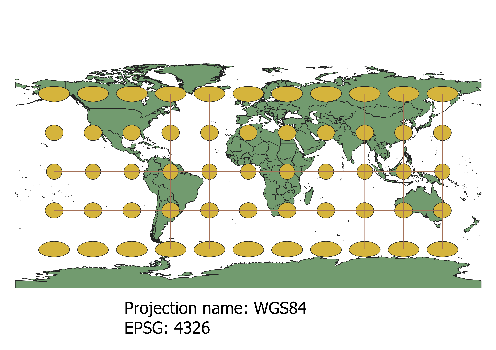
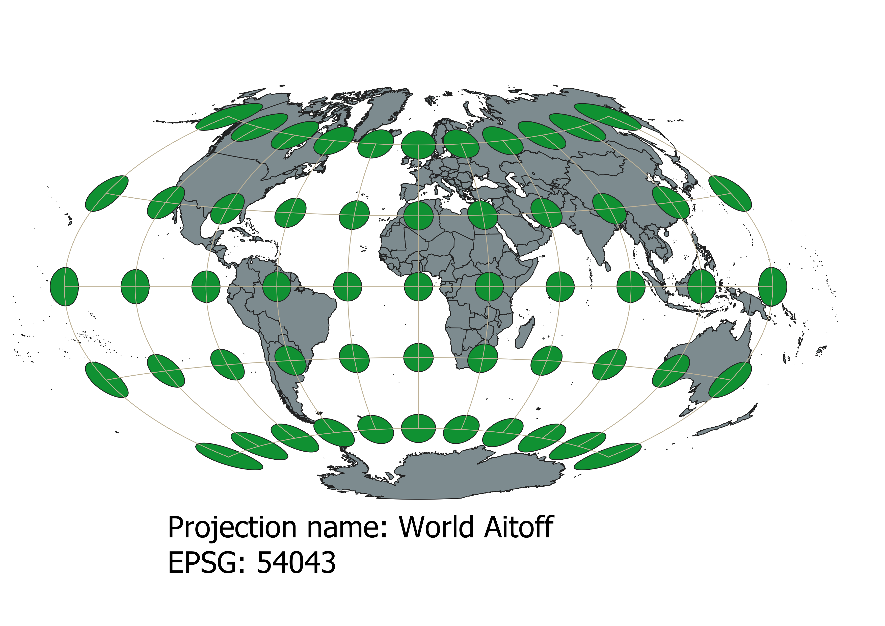
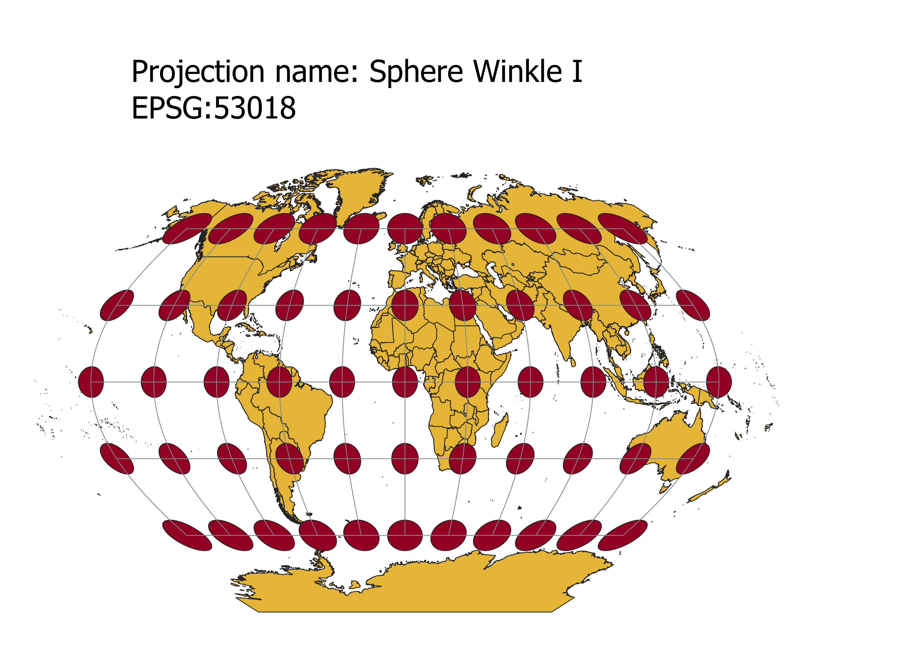
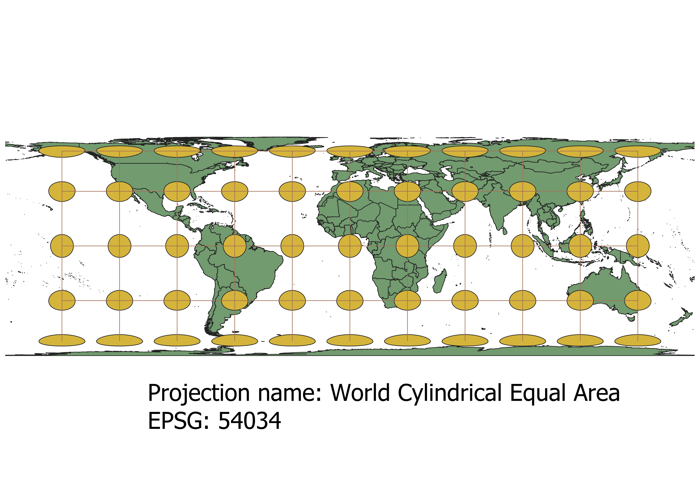
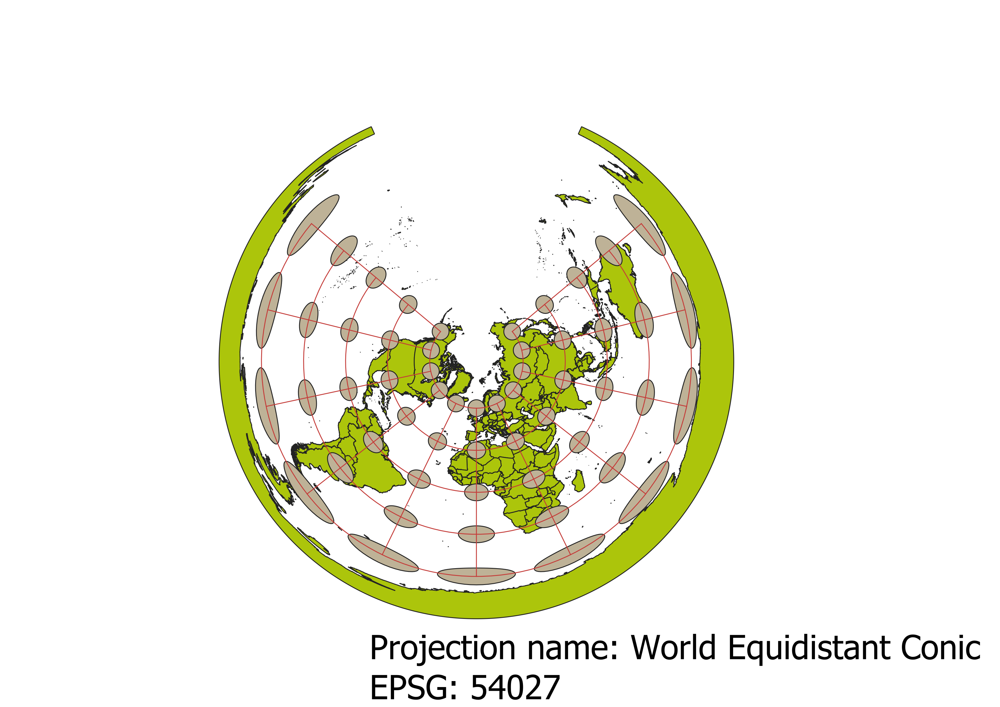
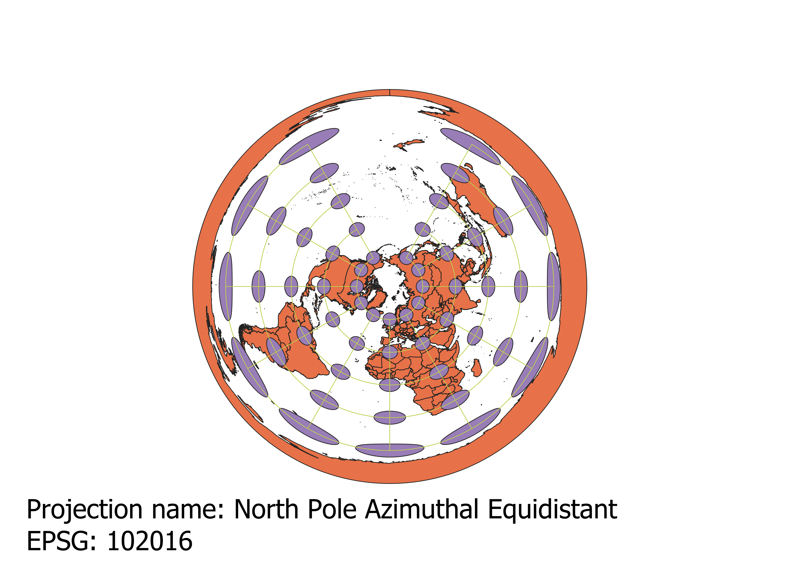
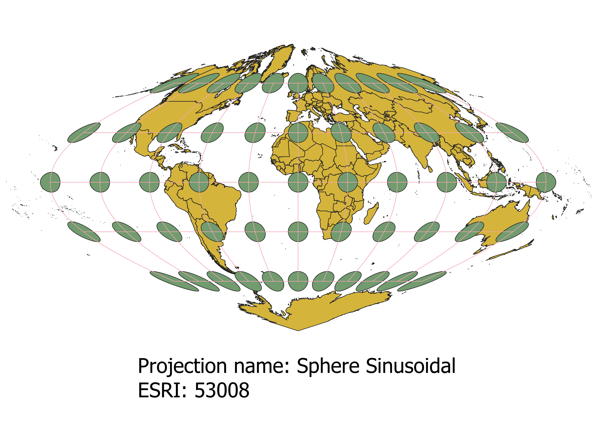
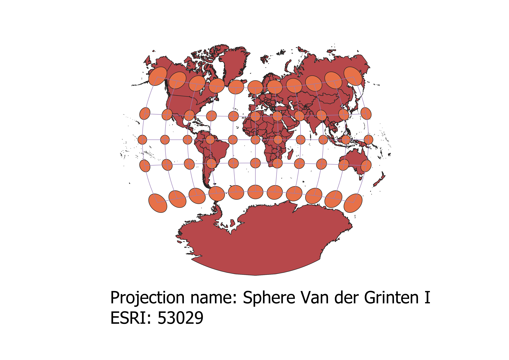

In this project I learned how to display images in different projections
How to display maps in different projections:
I was able to display the image of the map as different projections in QGIS by first exporting the map as a ESRI shapefile. When exporting, I changed the EPSG of the map to the specific projection desired. After that, I added the graticules and caps via the indicatrix mapper plugin which shows distortion. Lastly, I changed the CRS (coordinate reference system) of the project properties in the bottom right corner, added the description of the EPSG and projection using print layout, and saved the image as a JPEG.
WGS84 Projection
The WGS84 is a coordinate reference system standard, and the EPSG 4326 was created by the United State's National Geospatial-Intelligence Agency. One advantage is that it preserves the size, shape, and disatnce near the equator. However, the size and shape become distored as you move toward either pole, causing antartcica and the North Pole the become stretched.

Aitoff Projection
The Aitoff projection is a modified azimuthal map projection. It is made by halving the longitudes, and then horizontally stretches the map into a 2:1 ellipse. Therefore, this results in a distortion in the shape and size near the poles, making it a bad choice for depictions far from the center of the Earth. It preserves the center of the map, however, making it a good choice for depictions near the equator or prime meridian. The disatance is not drastically effected near the prime meridian, but becomes skewed as you move East or West.

Pseudo Mercator Projection
The pseudo mercator projection is one of the most common projections, and is a varient of the mercator projection. It is commonly used by Google maps and often the standard map used in schools. An advantage is that it does not distort distance, so it was used easily for sailing and navigation prior to GPS. Additionally, the shape of each country is relatively preserved. However, the size of the land masses as you move North and South is largely distorted, causing, for example, Greenland to appear around the same size as Africa, which is misleading.

Sphere Winkel I Projection
The Winkel I projection was created by German cartographer Oswald Winkel and is a modified azimuthal projection. It was created to equally minimize the distortions of shape, size, and distance. It is often used as the standard map because, although there is some distortion in shape and size, these errors are relatively small, and compared to many other maps it has little distortion overall.

World Cylindrical Equal Area Projection
This is a cylindrical projection. One advantage is that it preserves the sizes of most regions relatively well due to the formula of the projection, however as a consequence the shape is largely distored. Additionally, the distance is stretched from East to West, however this is not as large of a distortion as the distortion of the shape.

World Equidistant Conic Projection
This is a simple conic projection, and is very useful for displaying small areas, especially near the equator because of the small amount of distortion in shape, size, and distance there. Additionally, it is a good depiction of regions that are stretched from the East to the West, such as the United States. However, the far South is hugely distored in size, shape, and distance, making it a poor choice for any large scale map.

North Pole Azimuthal Equidistant
This is an azimuthal projection, in which the pole is projected around the edge of the map. In that sense, the projection does not give an accurate perspective of the size and shape of the poles. There is a large amount of distortion of size as you leave the center. However, there is relatively little distortion near the middle of the map, making it a good choice to accurately portray anywhere near the middle. Also, although the size of the pole has been distorted, it is often used for sea navigation near the poles due to the preservation of distance.

Sphere Sinusoidal
This projection shows the meridians as sinusoids. An advantage is that the distances, shape, and size near the prime meridian and the equator have no distortion, making it good at viewing those regions. As you move towards the extreme North, South, East, and West, there begin to be distortions of shape, size, and distance, however, making the projection mainly useful for depicting central Europe and Northwestern Africa.

Van der Grinten I
This is a polyconic projection, with a straight prime meridian and equator. Therefore, most points along the equator have very little distortion. The poles, however, are distored in size, while the shape is distorted slightly less. Additionally, the distance is distorted as you move away from the center (0,0). Another disadvantage is that because of the size distortion as you move away from the center, Antarctica is much larger than it should be.

Data used for this project
Download Natrual Earth 1:10m Cultural Vector